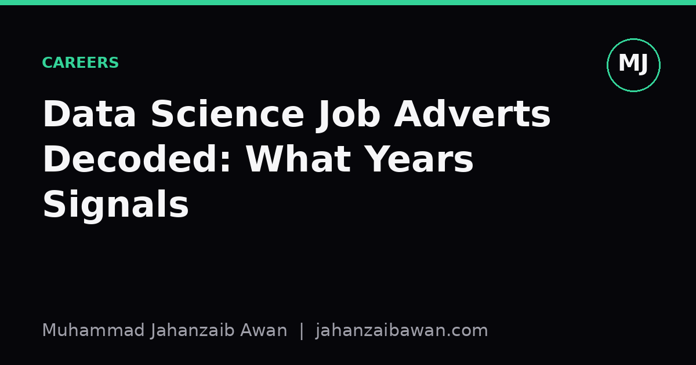

Data Science Job Adverts Decoded: What Years Signals
A number in a job advert is a proxy, not a measurement. Here is how to read it, and why applying anyway is often the rational move.

A number that hides more than it reveals
Almost every data science advert has a line like 'three plus years of experience required'. It reads as a precise, measurable filter, the sort of thing you could verify with a calendar. In practice it is closer to a rough proxy for a bundle of things the hiring manager cannot easily articulate: has this person shipped a model that survived contact with production data, can they defend a modelling choice under questioning, have they seen a pipeline break at 2am and know what to check first. None of that is captured by counting months on a payslip, but years of experience is cheap to write and easy to screen for, so it persists.
The trouble is that experience, as a construct, is not linear. Someone with two years at a company that gave them ownership of a full pipeline, from data collection through to a monitored model in production, has probably encountered more of the genuine failure modes than someone with five years of writing one-off notebooks that nobody else ever ran. Both would list the same job title. The advert cannot see the difference, so it falls back on the only proxy it has: time.
I think of this the way I think of any evaluation metric with construct validity problems. If you use accuracy on an imbalanced dataset as a stand-in for 'is this model useful', you will sometimes get badly misled, because the metric and the thing you actually care about have drifted apart. Years of experience has the same drift. It correlates with skill on average, across a large population, but for any single candidate the correlation can be weak or even negative.
A worked example: two candidates, one number
Take a concrete case. An advert asks for four years of experience in applied machine learning. Candidate A has exactly four years, all spent maintaining a single recommendation model, mostly retraining it on a schedule and tweaking hyperparameters when metrics drifted. Candidate B has two and a half years, but in that time worked across three different problem types, built two models from scratch including the data pipeline, and was the one who diagnosed a subtle case of target leakage that had been inflating validation scores for months before they joined.
On paper, A clears the bar and B does not. In a skills-based interview that actually probes reasoning, for instance asking each candidate to describe how they would design a train-test split for time-ordered data, or how they would suspect and confirm leakage in a suspiciously high-performing model, B is very likely to outperform A. The four-year threshold filtered for tenure, not for the specific competencies the role needs.
This is not an argument that experience is meaningless. On average, more time in a role does correlate with more exposure to edge cases, more scar tissue from things going wrong, and more calibrated judgement about what deserves attention. The point is narrower: for an individual candidate, the number on its own tells you very little, and a hiring process that stops at the number rather than probing the substance is measuring the wrong thing, in the same way that stopping at accuracy rather than checking calibration and failure modes gives you a false sense of confidence.
Why the number persists anyway
If years of experience is such a weak proxy, why do adverts keep using it? Partly it is a filtering cost problem. A hiring manager might receive two hundred applications for one role, and reading every CV in depth is not feasible, so a blunt numeric threshold is a cheap first pass, even knowing it will exclude some strong candidates and admit some weak ones. It is the recruitment equivalent of using a simple baseline before you build anything fancier: crude, imperfect, but fast to apply at scale.
There is also a signalling function that has nothing to do with actual skill. A years threshold tells applicants roughly what seniority and salary band the role sits in, which saves everyone time even if it is a poor filter within that band. A role advertised at 'five plus years' is communicating 'this is not an entry-level position and the compensation reflects that', more than it is making a precise claim about the skills required.
Finally, thresholds persist because they are defensible in a legal and procedural sense. 'The candidate did not meet the stated experience requirement' is an easier line to justify in a rejection than 'the candidate's answer to our leakage question was less convincing', even if the second reason is the one that actually mattered. Organisations often optimise for defensibility over accuracy, which is a rational choice for them even when it produces worse hiring outcomes on average.
What this means practically
If you are on the applying side, the practical takeaway is not to treat the number as gospel. If you meet perhaps seventy or eighty per cent of a stated experience threshold and can point to concrete, specific instances where you handled the substance of the role, whether that is leakage-aware evaluation, a messy real-world dataset, or a model that had to be explained to a non-technical stakeholder, it is usually worth applying. The threshold is a proxy the advert used to manage volume, not a hard technical requirement you have failed to meet.
If you are on the hiring side, the equivalent lesson is to be honest that years of experience is a screening heuristic, not an evaluation, and to build the actual assessment around the competencies that matter: can this person reason about evaluation design, do they understand where their models can fail, can they communicate uncertainty honestly. A number in a job advert should open the funnel, not close the argument.